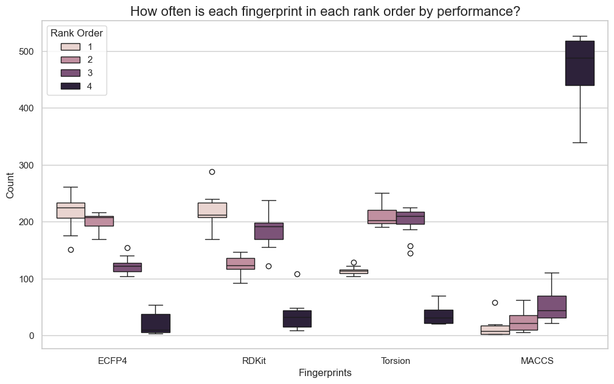

I recently read a very interesting paper from the team at Polaris on how best to compare ML models. Some of their recommendations I was already following — comparing distributions of performance values from different versions of a model, typically running models with 10 different seed values and using a boxplot to compare distributions. But I never knew how to perform statistical testing to say if the models were different. This paper provides a template to do just that.
I decided to implement the work in the paper and add it to my toolbox of cheminformatics code. This was very quick thanks to the large amount of code the team made available. Once I confirmed it worked on a few toy examples, I looked for a question to answer at larger scale: which fingerprint is better to train ML models?
Experimental setup
I extracted a set of 281 activity prediction datasets from Papyrus. Based on their high-quality subset, I extracted all combinations of protein target and measurement (Ki, IC50, …) containing over 500 records. Papyrus provides log unit measurements; I added a classification label (active/inactive) using a threshold of 6.5 log units. Datasets with under 10% or over 90% active compounds were removed to exclude the most imbalanced cases.
For each dataset, I calculated four fingerprints using RDKit: Morgan (radius 2), RDKit, Torsion, and MACCS. All fingerprints except MACCS were folded to 2048 bits; other parameters were left at default values.
Given a dataset and fingerprint combination, two ML algorithms were trained: Random Forest (RF, scikit-learn) and Gradient Boosted Trees (GBT, XGBoost). Both classification and regression models were trained. Data was split using the 5×5 cross-validation technique described in the paper — five rounds of 5-fold cross-validation, with a 90/10 training/validation split used for early termination in GBT. No hyperparameter optimisation was performed.
Total models trained: 25 (CV folds) × 4 (RF & GBT, classification & regression) × 4 (fingerprints) × 281 (datasets) = 112,400. Performance metrics extracted per model:
- Classification: balanced accuracy, precision, recall, F1-score, Matthews Correlation Coefficient (MCC), ROC-AUC
- Regression: R², Spearman correlation (ρ), MAE, MSE, RMSE
For each model and metric, Tukey's Honestly Significant Difference (HSD) test was applied using code provided by the Polaris team. To account for the large number of comparisons, a difference was only considered significant at p < 0.0001 — the lowest value provided by the function used.
Results
As a first step, I gathered results across all models and compared how often each fingerprint ranked first, second, third, or fourth by performance. Results were not particularly surprising. MACCS was most often the worst performer — not unexpected given its simplicity and lower dimensionality. Morgan fingerprints had a slightly higher median rank than RDKit across all metrics, but they were very close.

The more interesting results came from the statistical testing. Each dataset, algorithm, and metric combination was classified as one of:
- top_different — the best fingerprint was significantly different from the second
- top2_same — top two were not significantly different, but differed from third
- top3_same — top three were not significantly different, but differed from fourth
- all_same — no significant difference between any of the four fingerprints
Looking across all datasets and algorithms, in most cases the three top fingerprints were not significantly different. Based on the ranking results, these three are most likely Morgan, RDKit, and Torsion. The pattern was slightly less extreme for regression than classification metrics, but in all cases the number of instances where the best fingerprint was significantly better than the second was very small. There was also a surprising number of cases where all four fingerprints performed essentially the same.

Overall, the results suggest that the choice of fingerprint when training Random Forest or Gradient Boosted Trees for activity prediction is not critical. Other than MACCS, different fingerprints calculated with RDKit will in most cases perform equivalently.
Acknowledgements
I want to thank the team at Polaris and Pat Walters for the large amount of code they made freely available.
This post was proofread using Gemini 2.5 Pro with an academic proofreading prompt focused on clarity, conciseness, and coherence.